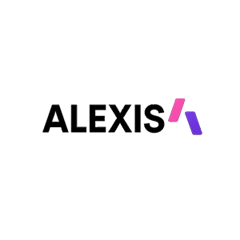

Et si internet et les réseaux sociaux avaient existé dès 1985 ? Ce projet imagine le site officiel de Tupac Shakur tel qu'il aurait pu exister au tout début de sa carrière, en 1991 — avec son esthétique, son catalogue musical, son merch et ses réseaux fictifs. Une expérience immersive entre uchronie culturelle et identité visuelle hip-hop.
.webp)
Contexte du projet
Le concept : réécrire l'histoire du web en plaçant Tupac Shakur au cœur d'une infrastructure numérique fictive née dès 1985. Le site est pensé comme s'il avait été lancé en parallèle de la sortie de 2Pacalypse Now en 1991 — son premier album solo, à une époque où il n'avait pas encore de label majeur et où internet n'existait pas encore pour le grand public.
L'enjeu créatif était de construire une identité visuelle cohérente avec l'esthétique hip-hop de l'époque — brutal, typographique, noir et rouge — tout en intégrant les fonctionnalités d'un site d'artiste moderne : catalogue musical, boutique merch, réseaux sociaux fictifs, newsletter et bio complète.
Le site propose
Section d'accueil plein écran avec typographie Anton massive, textures grain et dégradés rouges — une entrée en matière qui impose l'identité visuelle de l'artiste dès le premier scroll.
Présentation de 2Pacalypse Now avec tracklist complète et grille d'EPs. Overlay play au survol, mise en page éditorial inspirée des pochettes vinyle de l'ère hip-hop.
Section e-commerce fictive avec collection Death Row Records — t-shirts, hoodies, accessoires. Interface panier, sélection de taille et visuels générés pour simuler une vraie expérience shop.
Grid de 6 plateformes imaginaires (Instagram, YouTube, Spotify, Twitter, TikTok, Apple Music) avec handles @2pac — une projection de ce qu'auraient été ses présences numériques en 1991.
Page biographique complète sur fond blanc avec citations originales, stats discographiques et texte contextuel sur la carrière de Tupac entre East Harlem, Baltimore et Oakland.
Formulaire d'inscription newsletter fictif et bloc contact professionnel (booking, presse, licences) — tous les éléments d'un site d'artiste abouti, cohérents avec l'univers de 1991.
Technologies utilisées
 HTML5
HTML5
 CSS3
CSS3
 JavaScript
JavaScript
 G-Fonts
G-Fonts
Bilan & apprentissages
Ce projet m'a poussé à penser le design comme un acte narratif — chaque choix typographique, chaque couleur, chaque section devait raconter quelque chose sur l'époque et l'artiste. Travailler sur une uchronie culturelle demande une vraie cohérence conceptuelle : il ne suffit pas de faire "beau", il faut que l'esthétique soit crédible dans son contexte imaginaire. Techniquement, j'ai approfondi la gestion de sections à fonds alternés (noir/blanc), la construction d'une identité visuelle forte avec CSS pur, et la structuration d'un site multi-sections sans framework.
Plonge dans l'expérience — le site officiel fictif de Tupac tel qu'il aurait existé en 1991 si internet avait été là.